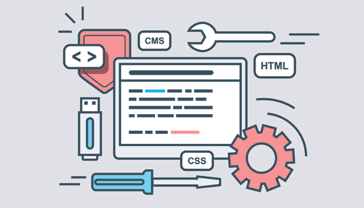

【独学でWeb制作マスター】勉強方法のまとめ【初心者向け】

Web制作の勉強をはじめてから3年くらい経過しました。
ノウハウがたまってきたので、Web制作の勉強方法をまとめようと思います。
Web制作勉強のロードマップ
ぼくはWeb制作をすべて独学で勉強してきました。いま思えば、だれかに相談していればもっと効率良く勉強できたな…と思っています。
しかし『相談するのが申し訳ない…』と感じてしまうぼくの性格上、独学が自分に合っていると思っています。たぶん世の中にはぼくと似た性格の方がいると思うので、そういった方向けに記事を書きます。この記事がWeb制作勉強のロードマップとなれば幸いです。
読んでほしい人
Web制作を勉強している／これから勉強しようと思う方
当記事のとおりに勉強することで、ランサーズ内で1~5万円程度の案件がこなせるようになります。独学はたまにつらいけど、頑張りましょう。
それでは、さっそくまとめていきます。
もくじ
【1】Webサイトの仕組みと基礎を理解する【HTML／CSSの入門編】
- 1-1. ドットインストール（HTML入門／CSS入門）
- 1-2. よくわかるHTML5+CSS3の教科書
- 1-3. ディベロッパーツールの使い方
- 1-4. フレームワーク（Bootstrap）の使い方
【3】実用的なWebサイトを制作する【WordPressを使う】
- 3-1. ドットインストール（WordPress入門）
- 3-2. 本格ビジネスサイトを作りながら学ぶ WordPressの教科書2
- 3-3. WordPressで個人ブログを作成する
- 3-4. ブログに広告を掲載してみる
【1】Webサイトの仕組みと基礎を理解する【HTML／CSSの入門編】

Web制作勉強の第一歩として、HTML／CSSがあります。すべてのWebサイトのベースとなる知識でこれを知っていないとなにも始まりません。
とはいえ、HTML／CSSの基本を学ぶことはとても簡単です。では、実際にどういった流れで勉強していくべきかを見ていきましょう。
1-1. ドットインストール（HTML入門／CSS入門）
» HTML入門 (全24回) – プログラミングならドットインストール
» CSS入門 (全23回) – プログラミングならドットインストール
Web界隈ではとても有名なドットインストールを使います。
ドットインストールとはプログラミングを動画でわかりやすく解説しているサイトでして、ぼくもかなりお世話になっています。海外には動画でプログラミング勉強をするサイトがたくさんありますが、日本ではドットインストールくらいしかありません。（その他サイトもありますが情報量が少ないです。）ちなみに、動画でプログラミング勉強ができるサイトは記事の5-4でまとめています。
1-2. よくわかるHTML5+CSS3の教科書
HTML／CSSの勉強においては、この1冊で十分です。HTMLとCSSのうしろに数字（5と3）がついていますが、これはバージョンを表しているだけで、これから勉強を始める方はとくに気にしなくて大丈夫です。
本書を使うにあたっての注意点としては、多分途中で飽きるということです。これは人にもよりますが、ぼくの場合は途中で飽きました。飽きないようにするコツとしては、ゆるく読むことが大切です笑。HTML／CSSは基礎だけど幅が広いです。なので、1度で理解しようとすると時間がかかりすぎて飽きる原因になります。
1-3. ディベロッパーツールの使い方
ドットインストールとよくわかるHTML5+CSS3の教科書を読み終えた時点で、HTML／CSSはこんなもんか、くらいは理解できている状態かと思います。このタイミングでディベロッパーツールの使い方を理解しておくことが大切です。ぼくが独学で勉強していたときは結構後の段階でディベロッパーツールを知ったので、残念なことをしたな…と後悔しています。具体的な使い方は以下の記事によくまとまっています。
» Web開発でよく使う、特に使えるChromeデベロッパー・ツールの機能 – Build Insider
1-4. フレームワーク（Bootstrap）の使い方
人によっては、基礎をマスターしたあとに、フレームワークを使うべきだと言います。しかし、ぼくの考えは違っていまして、初心者でもばりばりフレームワークを使うべきだと思います。理由としては、フレームワークは楽しいからです。というのも、基礎学習の本では10行以上で書かれていたコードが、フレームワークを使うことで、たった1行で実現できたりするからです。
HTMLのフレームワークは数多くありますが、中でもBootstrapを利用することをオススメします。理由は単純で、1番広く使われているフレームワークだからです。ネットでググれば参考情報が数多くでてきます。
勉強方法は、またかよ、と言われそうですが、ドットインストールがオススメです。以下の動画をサクっと見てしまいましょう。
» Bootstrap 3.0入門 (全18回) – プログラミングならドットインストール
【2】Webサイトにアクセスを集める【SEOの入門編】

Webサイトをつくる目的は人それぞれですが、オンライン上に公開するからには、多くの人に見てもらいたいと思うのは人間の心理かと思います。
そこで必要となってくるのがSEOの知識です。SEOとはサーチエンジンオプチマイゼーションのことであり、かんたんに言うと、あるキーワードで検索されたとき、上位表示を狙うために必要となる技術です。特に検索結果のトップ10に入ると、数多くのユーザーがサイトに訪れてきます。では、どういった流れでSEOを勉強していくべきか見ていきましょう。
2-1. これからはじめる SEO内部対策の教科書

SEOの基礎勉強にはこの1冊で十分です。早い人なら2~3時間で読み終えるかと思いますが、質の高い情報が凝縮されています。また、これからWebマーケティング会社に就職するって人も読んでおいて損はないかと思います。
2-2. バズ部のご紹介

{kind=link}
SEOの基礎が分かった時点でオススメするのがバズ部です。Webマーケティング業界ではかなり有名なメディアでして、記事の質がかなり高いです。できれば全記事を読んでもらいたいですが、今回はバズ部の中でもとくに必読記事を3つご紹介します。
» SEO内部対策で行うべき２０の事
» SEO対策｜検索上位を独占するために弊社が行っている36の手順
» ロングテールSEOで検索アクセスを倍増させるための基礎知識と具体策
2-3. コピーライティング入門
SEOがわかっただけでWebサイトにある程度の訪問者（トラフィック）を生むことが出来ます。しかし、SEOの最適化だけをしていても、実際の記事の質が低かったら読者は失望するだけです。そこで必要となってくるのがライティング技術です。最近のIT業界ではかなり重宝されるスキルでして、すばらしい文章が書ければメディア運営しているIT企業からは引っ張りダコです。
文章力はどのように鍛えるか？それは、インプットとアウトプット量を増やすことです。そこで今回は、効率的にインプット量を増やすために必読な記事と書籍をご紹介します。
» たった1記事で8万人に読まれる文章を書けるようになるライティング術
» コンテンツマーケティングの進め方|弊社が広告費ゼロで10倍の売上を達成した手法
2-4. キーワードの検索ボリュームの重要性
ここまでで、SEOとコピーライティングに関してある程度の知識がついたと思います。では、次に学ぶべきことはなんでしょう。それは、検索ボリュームについてです。検索ボリュームとは、あるキーワードがどのくらいの回数で検索されているかという意味です。
キーワードの検索ボリュームを測るためには、キーワードプランナーというツールを利用します。Googleが提供しているサービスで、キーワード別の検索ボリュームをかんたんに調べることができます。具体的なツールの使い方は以下の記事をご覧ください。
» 【徹底図解】キーワードプランナー使い倒し術
Web集客についてもっと深く知りたい方は下記をどうぞ。
» 【超初心者向け】Web集客の基礎から応用までガッツリまとめました。
【3】実用的なWebサイトを制作する【WordPressを使う】

ここまででWebサイト制作とSEOの基礎がわかりました。ここからは実践的な話となります。
Web制作初心者に最初にオススメしたいのがWordPressです。WordPressはCMSというシステムで、ざっくり説明すると、だれでも簡単にWebサイトがつくれるツールです。もっと詳しく知りたい人は適意ググってみてください。
では、WordPressを使って実際にWebサイトをつくっていきましょう。具体的な勉強方法を書いていきます。
3-1. ドットインストール（WordPress入門）
» WordPress入門 (全23回) – プログラミングならドットインストール
やはり最初はドットインストールをオススメします。でも、すべてを見る必要はありません。とりあえずは#01〜#06までを見ておけば問題ないです。それ以上の部分は、現時点だとすこし難しいです。ドットインストールは1つの動画が3分なので、6つの動画は約20分で閲覧可能です。いますぐ勉強しちゃいましょう。
3-2. 本格ビジネスサイトを作りながら学ぶ WordPressの教科書
WordPressの基本的な操作方法がわかった時点でオススメしたいのが、WordPressの教科書です。WordPressの基礎から応用までが解説されており、本を読みつつ実際に手を動かしてみることで、WordPressの全体像がわかるようになります。WordPressはとてもかんたんなので、この1冊を仕上げれば、その他の本は必要ないです。ググるだけで十分です。
3-3. WordPressで個人ブログを作成する
WordPressの教科書2を読むことで、WordPressの基礎知識は十分についたと思います。では、このタイミングで個人ブログをつくってみましょう。HTML／CSS／SEO／コピーライティング／WordPressの知識を実際に活用していくタイミングです。
最初は既存のテンプレートをWordPressにインストールすることをオススメします。ちなみに『WordPress 無料 テーマ まとめ』などでググると、かっこいいテンプレートがまとめられた記事が数多くヒットします。お気に入りのテンプレートでインプットしてきた知識をアウトプットしていきましょう。
ちなみに当ブログで使用しているテーマは自作しました。SEOに強い設計になっており、自信作です。販売もしておりますのでぜひどうぞ。
» 【お知らせ】マナブログのWordPressテーマのコピーを販売します
3-4. ブログに広告を掲載してみる
世間的にはあまり知られていないことですが、Webサイト運営やブログでは収益を生むことが出来ます。このブログにもいくつか広告が貼られていますが、以下の条件を満たすことで、収益が発生します。
1. 訪問者が広告をクリックする（1クリックで20〜40円程度）
2. 訪問者がクリックした広告のリンク先で商品を購入する（購入額の数%）
まずは基本として、上記2つを覚えておけば問題ないです。それらをサイト上に掲載するには、Googleアドセンス、Amazonアソシエイト、A8.netを使います。具体的な使い方は以下の記事を参考にしてください。
» ブログで稼ぐことは可能だと断言します。理由＋方法をセットで解説
{kind=link}
【4】Webサイトに動きをつける【jQuery】
ここまでくると基本的なWebサイト制作はマスターしている状態になります。次に興味が湧いてくるのは、サイトをもっと見やすくしたい、サイトに動きをつけてみたいといったことではないでしょうか？
{kind=link}
そこで必要となる知識がJavaScriptです。しかし、JavaScriptは難しいので、今回はjQueryを利用します。jQueryとはJavaScriptのフレームワークだと思ってもらえたら問題ないです。JavaScriptで実現することが難しいコードでも、jQueryを使うことでかんたんに実現することができます。では、実際にどういった流れで勉強していくべきかを見ていきましょう。
4-1. ドットインストール（jQuery入門）
» jQuery入門 (全20回) – プログラミングならドットインストール
まずは定番のドットインストールです。全20回をしっかり閲覧してください。jQueryの全体像がつかめるようになります。
4-2. Web制作の現場で使うjQueryデザイン入門
ドットインストールを終えた時点でオススメしたいのが、Web制作の現場で使うjQueryデザイン入門です。実務で使われるサンプルが数多く紹介されており、jQueryの便利さが実感できるかと思います。同時に、jQuery勉強におけるモチベーションアップにも繋がります。
4-3. jQuery最高の教科書
つぎにオススメしたいのが、jQuery最高の教科書です。Web制作の現場で使うjQueryデザイン入門とは異なり、サンプルコードがレベル別に紹介されており、解説もかなり詳しいです。とはいえ、本書の後半に進むに連れてコード自体は難しくなっていくため、すこし辛いかもしれません。この本を読む上で理解してほしいことは、サンプルコードを完全に理解する必要はないということです。現時点では「jQueryはこんなものかー」くらいの気持ちでOKかと思います。
【5】もっと自由にWebサイトをつくる【PHP】

ここまでくると、Webサイト制作にある程度満足する人も多いかと思います。しかし、さらに勉強を進めることでより自由度の高いWebサイト／Webサービスをつくることができるようになります。当記事では、初心者にオススメなPHPをもとに勉強方法を解説していきます。
5-1. よくわかるPHPの教科書
PHPの入門書です。書かれている内容はかなり基礎ですが、本書を読むことで、PHPを使うとどういったことが実現できるのかがイメージできるようになります。購入しなくても本屋での立ち読みでもOKかと思います。
5-2. ドットインストール（PHP入門基礎編）
» 詳解PHP 基礎文法編 (全34回) – プログラミングならドットインストール
お決まりのドットインストールを使います。ぶっちゃけPHPの基礎はつまらないですが、ここを知っていないとなにも始まらないので、我慢して見ましょう。応用編の方は見ておいたほうがいいですが、そこまで真剣に理解しなくても困らないです。というのも、最近では素晴らしいフレームワークが数多くありますので、従来の長ったらしいコードを書く必要性がかなり低下しているためです。
5-3. Webサイト制作者のための PHP入門講座
ここから一気に実践に近い本になります。本書の前半部分は基礎知識ですが、後半からは具体的なWebサービスの構築方法が書かれています。このあたりからPHP勉強が楽しくなります。
5-4. Tut+（海外のプログラミング勉強サイト）

» How-To Tutorials & Free Online Courses by Envato Tuts+
最後にご紹介するのがTut+（海外のプログラミング勉強サイト）です。残念ながら日本語には対応していませんが、PHPやその他フレームワークの素晴らしい動画教材が揃っています。気になる料金としては、有料となっています。すこし残念ですがお金を払う価値はあります。「どうしても無料で見たい！」って人はYoutubeでググってみてください笑。。たまに該当動画が無料で公開されています。
» 関連：PHP初級者から中級者になる必殺技は、Youtubeにあり【便利で泣ける】
【6】まとめ
最後までご覧いただきありがとうございます。この記事はぼく自身がWeb制作を独学で学ぶ際に使った方法です。この方法が必ず正しいとは限りませんが、多少なりとも参考になれば幸いです。
{kind=link}
また、プログラミング勉強に行き詰まっている人などは、ブログのお問い合わせフォームからご連絡いただけたら、可能な限り回答します。プログラミング勉強がんばりましょう。
P.S：普段の僕は「Twitter」を軸に発信しています。また最近は「Webマーケ教材」の作成に注力しており、ネットで稼ぐスキルを学べます。ブログの更新通知は,twitterでお知らせいたします。